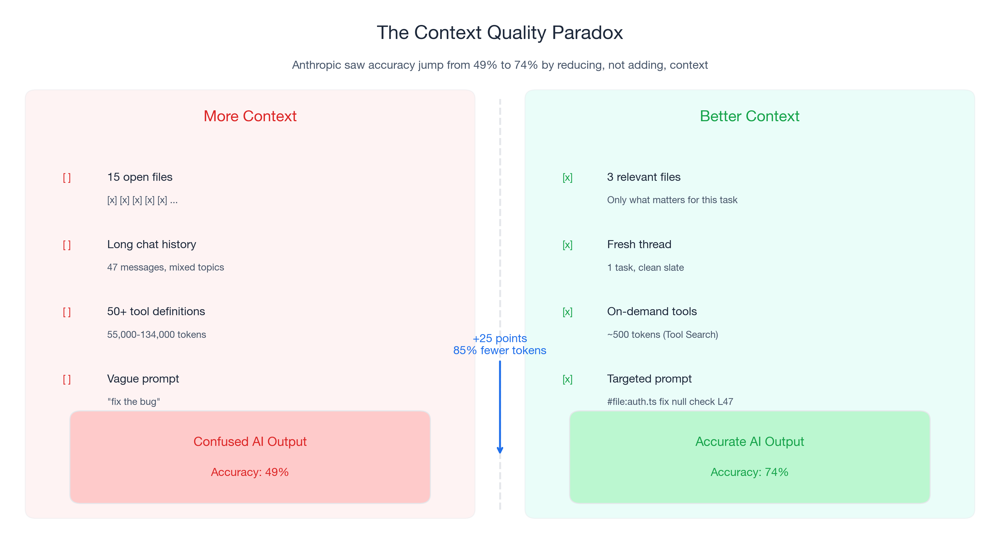
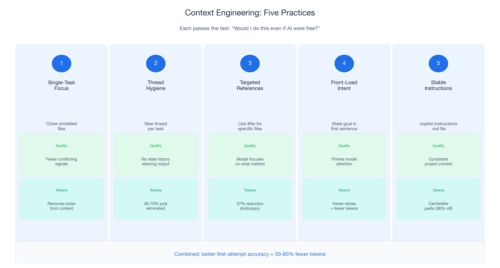
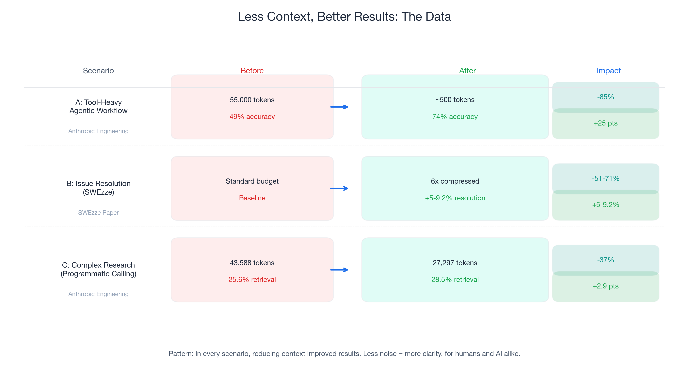

Part 1 of 3 in the "Engineering Better AI Code Assistant Interactions" series
Last November, Anthropic's engineering team ran into a problem. Their tool-use system was loading 50+ MCP tool definitions into every prompt — 55,000 to 134,000 tokens of context before the conversation even started. The model was drowning in tool definitions it would never use in a given request.
Their fix was counterintuitive: instead of adding smarter tool selection logic on top of the existing context, they stripped it out. They built Tool Search, which loads only ~500 tokens initially and fetches relevant tool definitions on demand. The result: 85% fewer tokens AND accuracy improved from 49% to 74% on Opus 4. On Opus 4.5, accuracy jumped from 79.5% to 88.1%.
Read that again. They removed context and the model got better.
This is not an isolated finding. A 2026 paper on SWEzze — a context compression system for software engineering tasks — showed that 6x compression delivered 51-71% fewer tokens AND 5-9.2% better issue resolution rates on SWE-bench. Less input. Better output.
If you have used an AI code assistant for more than a week, you have experienced this pattern without knowing it. Some sessions, Copilot generates exactly what you need on the first attempt. Other sessions, it produces confused, irrelevant, or hallucinated code. The difference is usually not the model. It is the context. GitHub Copilot context management — what you include, exclude, and how you structure it — determines output quality more than model choice.
The single highest-leverage skill for AI-assisted development is context engineering: the practice of giving AI better input so it produces better output. The quality improvement is the primary goal. The cost savings — and with GitHub Copilot moving to usage-based billing on June 1, 2026, there are real cost savings — are a natural consequence.
This post covers five practices that make your AI code assistant more reliable. Every practice passes a simple test: would I do this even if AI were free? The answer is yes for all five.

The 30-70% Problem
Research from Towards Data Science found that 30-70% of typical AI prompt context is noise — tokens that do not help the model and actively degrade performance. In code assistant workflows, context noise falls into three categories: stale context (old files and chat history from previous tasks), redundant context (the same information loaded through multiple paths), and irrelevant context (tool definitions and files unrelated to your current task).
Anthropic's data puts a concrete number on this. Before their Tool Search optimization, 50+ MCP tools consumed 55,000-134,000 tokens per request. After: ~500 tokens initial load. The 85% reduction did not remove useful information — it removed noise.
Five Practices That Improve Output Quality and Optimize AI Code Assistant Output
Each practice passes the "would I do this even if AI were free?" test. Ordered by impact and ease of adoption.
Practice 1: Single-Task Focus
Close files unrelated to your current task before prompting. Every open file adds tokens to Copilot's context. More importantly, unrelated files introduce conflicting patterns. Anthropic saw accuracy jump 25 percentage points by loading only relevant tool definitions instead of everything.
Practice 2: Thread Hygiene
Start a new chat thread when you switch tasks. One thread per task. Old messages accumulate tokens and steer the model toward previous (now-irrelevant) problems. TDS analysis found that removing junk from context clears 30-70% of tokens.
Practice 3: Targeted References
Use #file references to include specific files instead of relying on implicit "everything that is open" context. Anthropic's Programmatic Tool Calling reduced tokens from 43,588 to 27,297 (37%) while improving accuracy from 25.6% to 28.5%.
Practice 4: Front-Load Intent
State what you want in the first sentence, then provide details. Language models process context sequentially; putting intent first primes the model's attention. Structure prompts as: intent → context → constraints.
Practice 5: Stable Instructions
Maintain a .github/copilot-instructions.md file with your project's tech stack, conventions, and constraints. This provides consistent, cacheable project context and eliminates repetitive explanations.

What Happens When You Engineer Context: The Data
Three concrete scenarios comparing unoptimized vs. optimized context:
| Scenario | Token Reduction | Quality Improvement | Source |
|---|---|---|---|
| Anthropic Tool Search | 85% (55K → ~500) | 49% → 74% accuracy | Anthropic Engineering |
| SWEzze Compression | 51-71% | 5-9.2% better resolution | SWEzze paper |
| Programmatic Tool Calling | 37% (43,588 → 27,297) | 25.6% → 28.5% accuracy | Anthropic Engineering |
The pattern is unambiguous: in every scenario, less context produced better results.

June 1, 2026: Context Quality Gets a Price Tag
Starting June 1, 2026, GitHub Copilot moves from a premium-request system to usage-based billing. Every token of junk context now has a visible cost. But even without the billing change, this advice makes you a better developer.
Note: model multipliers, included models, and promotional credits are subject to change. Build your workflow around context quality, which is durable, not around specific multiplier values.
Your First Week: Five Changes, Five Minutes Each
- Close irrelevant files before prompting (quality impact: high)
- Start new threads when switching tasks (quality impact: high)
- Use
#filereferences for targeted context (quality impact: high) - Create a
.github/copilot-instructions.md(quality impact: medium, compounds over time) - Front-load intent in every prompt (quality impact: medium)
Coming Up Next
In Part 2: "Invisible Compound Savings", I cover prompt caching (up to 90% savings on repeated context) and workflow discipline (the retry tax and how to eliminate it).
In Part 3: "The 120x Spread", I cover model selection — not "use cheap models" but "understand when premium models genuinely help."
This is Part 1 of 3. Part 2: Invisible Compound Savings → | Part 3: The 120x Spread →